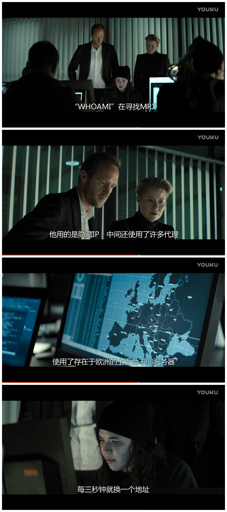
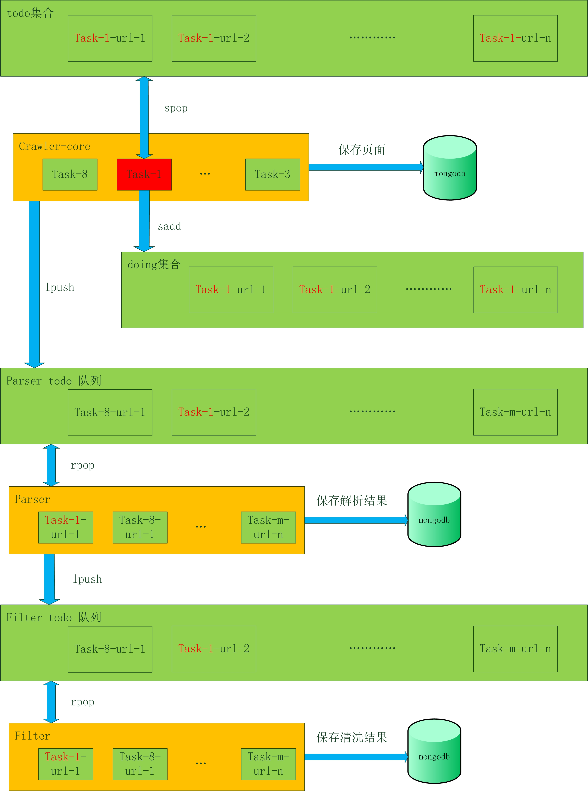

手把手教你写网络爬虫（6）：分布式爬虫
原文出处： 拓海

下面是一个超级计算机的排行榜，如果我们能拥有其中任意一个，那么我们就不需要搞什么分布式系统。可是我们买不起，即使买得起，也交不起电费，所以我们只好费脑子搞分布式。
Rank | System | Cores | Rmax | Rpeak | Power (kW) |
1 | Tianhe-2 China | 3,120,000 | 33,862.7 | 54,902.4 | 17,808 |
2 | Titan US | 560,640 | 17,590.0 | 27,112.5 | 8,209 |
3 | Sequoia US | 1,572,864 | 17,173.2 | 20,132.7 | 7,890 |
4 | K Japan | 705,024 | 10,510.0 | 11,280.4 | 12,660 |
5 | Mira US | 786,432 | 8,586.6 | 10,066.3 | 3,945 |
分布式的本质就如上期提到的一个概念：分布式系统是若干独立计算机的集合，这些计算机对于用户来说就像是单个相关系统。这就是在说，把廉价的计算机堆到一起，通过程序控制，使其整体用起来像个高性能计算机，目的就是节约成本。
对于分布式爬虫系统来说，假设1台机器能10天爬完一个任务，如果部署10台机器，那么1天就会完成这个任务。这样就用可以接受的成本，让系统的效率提高了十倍。之前介绍的单机架构是达不到这种效果的，是时候介绍新的架构了！
架构概述
与第二期介绍的通用爬虫架构不同，下面是一个聚焦爬虫的架构图，与前者相比，它不仅要保存网页，还要提取出网页中的指定内容。

Crawler_core 从任务队列获取爬虫任务，请求网页并将其存储到Mongodb，同时解析出网页中的URLs并缓存到Redis。最后通知Common-clean-platform抽取网页的指定字段。
Common-clean-platform 收到Crawler_core的通知后，从Mongodb中取出网页，根据配置进行数据抽取，形成结构化的数据，保存到Mongodb。
Scheduler_manager 负责任务调度（如启停），状态控制（如爬取数量），redis资源清理等。
Resource_manager 封装Mysql、Mongodb、Redis接口。Mysql存储任务基本信息、配置文件、任务实时状态等。Mongodb存储网页、结构化数据。Redis缓存队列、集合等数据结构。
Proxy 代理服务器。建立网络爬虫的第一原则是：所有信息都可以伪造。你可以用非本人的邮箱发送邮件，或者通过命令行自动化鼠标的行为。但是有一件事情是不能作假的，那就是你的IP地址。如果你在爬取的过程中不想被人发现，或者不想IP被封杀，那么就需要使用代理。
笔者以前看过一个电影叫《Who Am I – No System Is Safe》，剧中的黑客老大“Who Am I”就用代理来隐藏自己，躲避FBI和其他黑客组织的追踪。

不过最终他还是被抓了，看来即使用了炫酷的技术，也不是绝对安全的。
如果你也想体验一下匿名访问网络，可以试试Tor代理服务器。洋葱路由（The Onion Router）网络，常用缩写为Tor，是一种IP 地址匿名手段。由网络志愿者服务器构建的洋葱路由器网络，通过不同服务器构成多个层（就像洋葱）把客户端包在最里面。数据进入网络之前会被加密，因此任何服务器都不能偷取通信数据。另外，虽然每一个服务器的入站和出站通信都可以被查到，但是要想查出通信的真正起点和终点，必须知道整个通信链路上所有服务器的入站和出站通信细节，而这基本是不可能实现的。
Tor 是人权工作者和政治避难人员与记者通信的常用手段，得到了美国政府的大力支持。当然，它经常也被用于非法活动，所以也是政府盯防的目标（虽然目前盯防得并不是很成功）。
流程控制 – 任务
Scheduler_manager定时读取Mysql中的任务信息，根据任务的周期等配置进行调度，下面是一个最基本的任务启停流程。

1. 当一个任务可以开始时，Scheduler_manager会将其基本信息(包括task_id，种子url，启动时间等)插入Reids的任务队列中。如果任务结束，就从队列中删除。
2. 每个Crawler_core实例定时读取Redis任务队列中的任务，插入到本地的内存任务队列中。
3. 相同的任务可以存在于不同的Crawler_core实例中，一个Crawler_core实例中也可以有相同的任务。
4. Crawler_core的抓取线程从内存队列中获得可执行的任务，依次抓取和解析。
流程控制 – 数据
现在每个Crawler_core实例都有了待处理的任务，接下来就要对每个任务的url进行处理了。继续使用Redis作为公共缓存来存放URLs，多个Crawler_core实例并行存取todo集合。

1. Todo集合 Crawler_core从集合中取出url进行处理，并将解析得到的url添加到todo集合中。
2. Doing集合 Crawler_core从todo中取出url，都同时保存到doing中，url处理完成时被从doing中删除。主要用于恢复数据。
3. Parser todo队列 Crawler_core将已经保存到mongodb的页面的url发送到parser todo队列，Parser读取数据后进行解析。
4. Filter todo队列 Parser将已经保存到mongodb的解析结果的url发送到filter todo队列，Filter读取数据后进行清洗。
流程控制 – 状态

蓝色箭头 业务模块实时更新任务状态到Redis，StateObserver读取到Redis状态后，更新到mysql。
红色箭头 ClearObserver定时读取Mysql状态，若任务完成或中止，则清除任务所有的Redis key。
Redis中的任务信息如下表所示：
taskId:flag:crawler:info | ||
Filed | value | 说明 |
totalCnt | 10000 | 抓取的url总数：抓取完成，不管成功失败，都加1 |
failCnt | 0 | 抓取的url失败数：抓取失败，加1 |
switch | 1 | 任务状态：0：停止，1：启动，2：暂停，3：暂停启动 |
priority | 1 | 任务优先级 |
retryCnt | 0 | 重试次数 |
status | 0 | 任务执行状态：1：进行中，2：完成 |
Ref | 0 | url引用数：每消费一个url，减1；生成一个url，加1。等于0则任务完成 |
maxThreadCnt | 100 | 任务的最大线程数 |
remainThreadCnt | 10 | 剩余可用线程数 |
lastFetchTime | 1496404451532 | 上一次抓取时间 |
taskId:flag:parser:info | ||
Filed | value | 说明 |
totalCnt | 10000 | 解析总数：解析完成，不管成功失败，都加1 |
failCnt | 0 | 解析失败数：解析失败，加1 |
crawlerStatus | 0 | 爬取状态：0：进行中，2：完成 |
ref | 10 | url引用数：crawler每保存一个网页，加1；parser每解析完成一个网页，减1。等于0不说明任务完成。若crawlerStatus等于2，ref等于0，则任务完成。 |
taskId:flag:filter:info | ||
Filed | value | 说明 |
totalCnt | 10000 | 清洗总数：清洗完成，不管成功失败，都加1 |
failCnt | 0 | 清洗失败数：清洗失败，加1 |
crawlerStatus | 0 | 解析状态：0：进行中，2：完成 |
ref | 10 | url引用数：parser每保存一条数据，加1；filter每清洗完成一条数据，减1。等于0不说明任务完成。若parserStatus等于2，ref等于0，则任务完成。 |
流程控制 – failover
如果一个Crawler_core的机器挂掉了，就会开始数据恢复程序，把这台机器所有未完成的任务恢复到公共缓存中。

1. 监控到192.168.0.1心跳停止。
2. Master遍历正在运行的任务: task_jdjr:1489050240345等。
3. 得到doing和todo集合：
1. task_jdjr:1489050240345:crawler:doing: 192.168.0.1
2. task_jdjr:1489050240345:crawler:todo
4. 将doing中的数据全部移动到todo中。
下一步
今天对架构和流程进行了一个概要的介绍，细节问题以后会慢慢说。下期我们就先聊聊URL去重那些事儿。
1 赞 4 收藏 评论